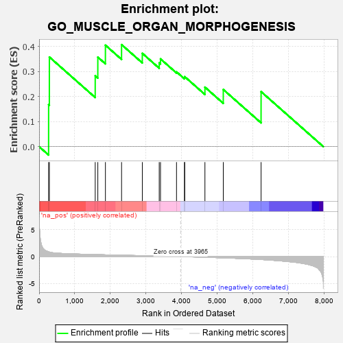
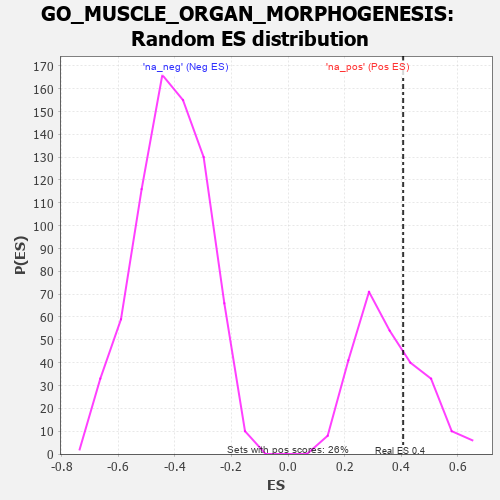

| | | Dataset | 7d |
| Phenotype | NoPhenotypeAvailable |
| Upregulated in class | na_pos |
| GeneSet | GO_MUSCLE_ORGAN_MORPHOGENESIS |
| Enrichment Score (ES) | 0.40705356 |
| Normalized Enrichment Score (NES) | 1.1474389 |
| Nominal p-value | 0.3079848 |
| FDR q-value | 0.5442 |
| FWER p-Value | 1.0 |
Table: GSEA Results Summary

Fig 1: Enrichment plot: GO_MUSCLE_ORGAN_MORPHOGENESIS
Profile of the Running ES Score & Positions of GeneSet Members on the Rank Ordered List
| PROBE | GENE SYMBOL | GENE_TITLE | RANK IN GENE LIST | RANK METRIC SCORE | RUNNING ES | CORE ENRICHMENT | | 1 | TBX20 | | | 267 | 0.880 | 0.1675 | Yes |
| 2 | SHOX2 | | | 288 | 0.842 | 0.3575 | Yes |
| 3 | FZD1 | | | 1574 | 0.379 | 0.2826 | Yes |
| 4 | RXRA | | | 1647 | 0.365 | 0.3571 | Yes |
| 5 | SMAD4 | | | 1860 | 0.326 | 0.4048 | Yes |
| 6 | UBE4B | | | 2313 | 0.258 | 0.4071 | Yes |
| 7 | FGFR2 | | | 2895 | 0.167 | 0.3723 | No |
| 8 | SMAD7 | | | 3369 | 0.093 | 0.3342 | No |
| 9 | MED1 | | | 3405 | 0.089 | 0.3501 | No |
| 10 | XIRP2 | | | 3854 | 0.020 | 0.2984 | No |
| 11 | TCF15 | | | 4077 | -0.020 | 0.2750 | No |
| 12 | WNT2 | | | 4084 | -0.021 | 0.2791 | No |
| 13 | MYLK | | | 4651 | -0.128 | 0.2373 | No |
| 14 | TBX1 | | | 5166 | -0.241 | 0.2278 | No |
| 15 | TPM1 | | | 6226 | -0.545 | 0.2193 | No |
Table: GSEA details [plain text format]

Fig 2: GO_MUSCLE_ORGAN_MORPHOGENESIS: Random ES distribution
Gene set null distribution of ES for GO_MUSCLE_ORGAN_MORPHOGENESIS